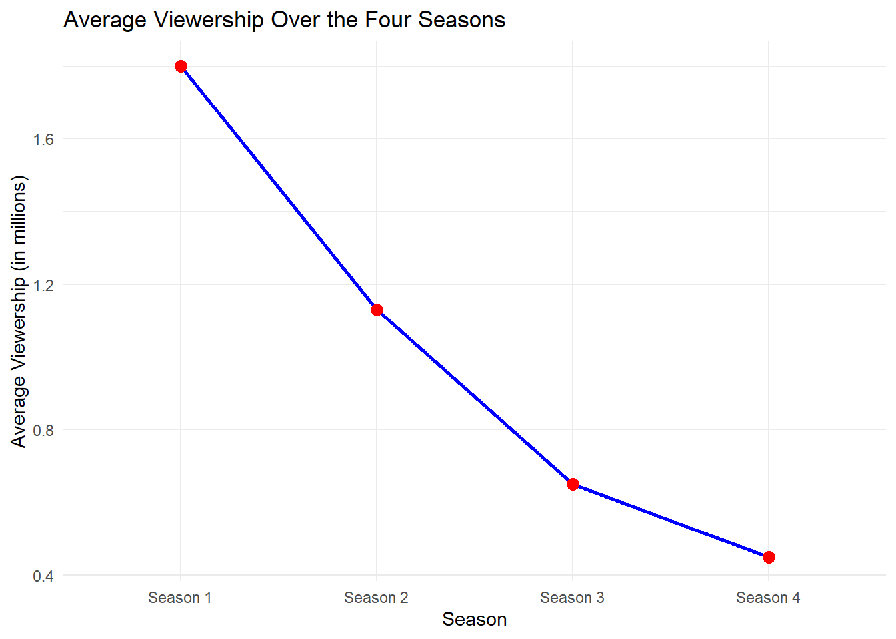
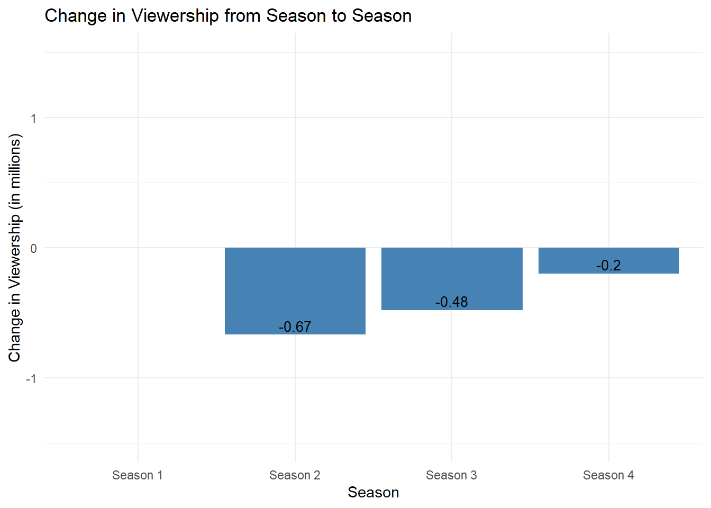

| Season | Tomatometer | Audience_Score |
|---|---|---|
| Season 1 | 91% | 87% |
| Season 2 | 97% | 82% |
| Season 3 | 85% | 46% |
| Season 4 | 88% | 77% |
The Sinner
The Sinner
“The Sinner” is an American police procedural anthology television series developed by “Derek Simonds” for USA Network. It is based on “Petra Hammesfahr’s” 1999 novel, which served as the basis for the first season. The series stars “Bill Pullman” as a police detective who investigates crimes committed by unlikely culprits and attempts to uncover their motivations. Only “Pullman” appears in every season, while the rest of the cast mostly changes for each season’s story.
The show was intended as an eight-part miniseries, but its success led to it being turned into an anthology series, which aired for four seasons from August 2, 2017, to December 1, 2021.
The first season of “The Sinner” received nominations for the Golden Globe Award for Best Miniseries or Television Film and Best Actress – Miniseries or Television Film for “Jessica Biel”. “Biel” was also nominated for a Primetime Emmy Award for Outstanding Lead Actress in a Limited Series or Movie.
The show captivates viewers with deep dive in to psyche of the main characters, posing an essential question who are we and what is our dark side?
Stuart Heritage:
What is it:
Let’s call it a whydunnit.
Why you’ll love it:
A woman – a normal, slightly dissatisfied woman – goes to the beach. She goes for a swim and, out of nowhere, is gripped by a strange sensation. She returns to the shore, hugs her son, eats a pear and then stabs a man to death.
Why? Did she know the victim? Did his sexy seaside horseplay bring back memories of some hidden trauma? Was it her medication? Her bedroom wallpaper? Was it because – as I initially suspected – he was playing music on his phone in a crowded area? The woman herself doesn’t seem to know. What’s going on? This is the central question at the heart of The Sinner.
A sly ratings success in the US – it has been the most-watched new cable show this year – The Sinner is based on the Petra Hammesfahr novel of the same name, and takes the form of a gussied-up push and pull between the woman (played by Jessica Biel) and the detective tasked with figuring out this mess (Bill Pullman).
The problem with programmes that hinge on a gimmick as grabby as this is that the answers are often much less satisfying than the inciting incident. But the joy of The Sinner is getting to watch Biel do everything in her power to just get the ordeal over with. A more traditional show would turn the relationship between her and Pullman into a cat and mouse, but that isn’t really the case here. The mouse is splayed out on the floor begging to be eaten and the cat can’t understand why.
She instantly pleads guilty to avoid a trial. But a competency evaluation is ordered, so she explains her motivation in horrific detail. But that’s quickly revealed to be a lie, so the process must begin anew. Biel would rather spend her life rotting in prison than truly examine her actions, but every detail that floats to the surface – drug problems, a cartoonishly awful childhood, sexy flashbacks of undulating bodies – starts to make that impossible. Before you know it, these flashbacks have piled up on top of more flashbacks and the whole thing edges towards the precipice. It gets to the point where the faintest prod could derail the entire series, so the fact that it doesn’t is nothing short of a miracle.
Fortunately, there are answers. This is no Lost-style wheel-spinning exercise, and the denouement is just as satisfying and horrible as the conclusion to the first Broadchurch. If you find yourself drifting away during The Sinner’s midpoint, I can promise you it’s worth persevering with.
As bracingly vanity-free as Biel’s performance is, all blood and gut and scab, Pullman is the real secret weapon here. His detective is rumpled and kinky, like Columbo if old Columbo episodes were routinely interrupted by scenes of him getting pegged by a dominatrix. He’s horribly, horribly sad, and you sense that he has only seized upon this case because it’s the one part of his life that he can control. Not to give anything away, but the show ends on such a note of finality that the only way forward would be to shove Pullman into a new mystery next year. Based on this run, that would be no bad thing.
The Sinner: A Statistical Overview
The The Sinner has had a dynamic viewership over its four seasons. The first season was met with a great reception, averaging 1.8 million viewers per episode. This success led to the transformation of the show from an intended mini-series to a full-fledged multi-season series.
However, subsequent seasons saw a decline in viewership. The numbers fell to an average of 1.13 million viewers per episode in the second season. The trend continued with the third season, which drew in an average of 0.65 million viewers, and the fourth season, attracting an average of 0.45 million viewers per episode.
While I found each season’s story incredibly captivating, it seems that not everyone shares my feelings towards the later seasons.
As the table shows, season 3 performed the worst, according to the audience score. However, critics rated season 2 slightly higher than the first season, as per the Tomatometer score.


Between the first and the second season, the viewership decreased by -0.67 million. The trend continued in the subsequent seasons, with a drop of -0.48 million viewers between the second and the third season, and -0.2 million viewers between the third and the fourth season. This consistent decrease in viewership may reflect various factors, such as changes in the series’ direction, competition with other shows, or shifts in audience preferences.